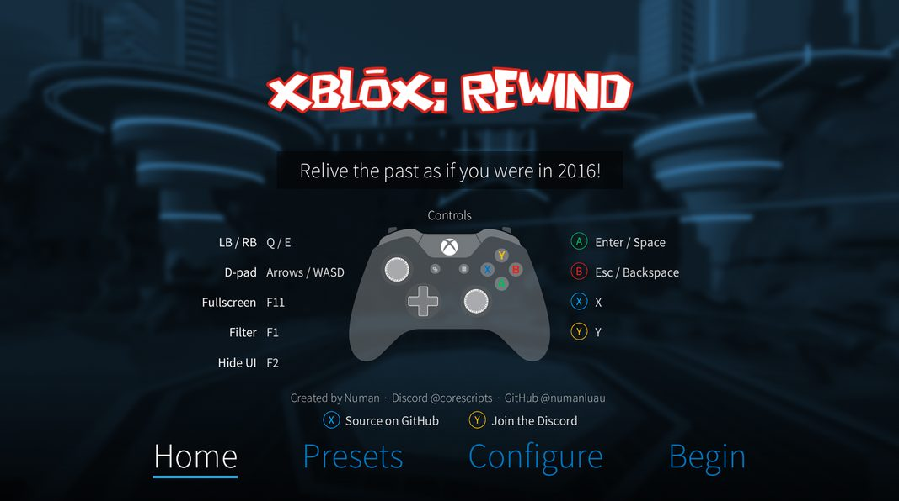
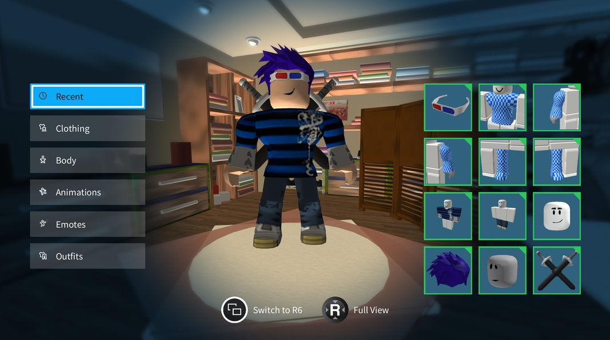
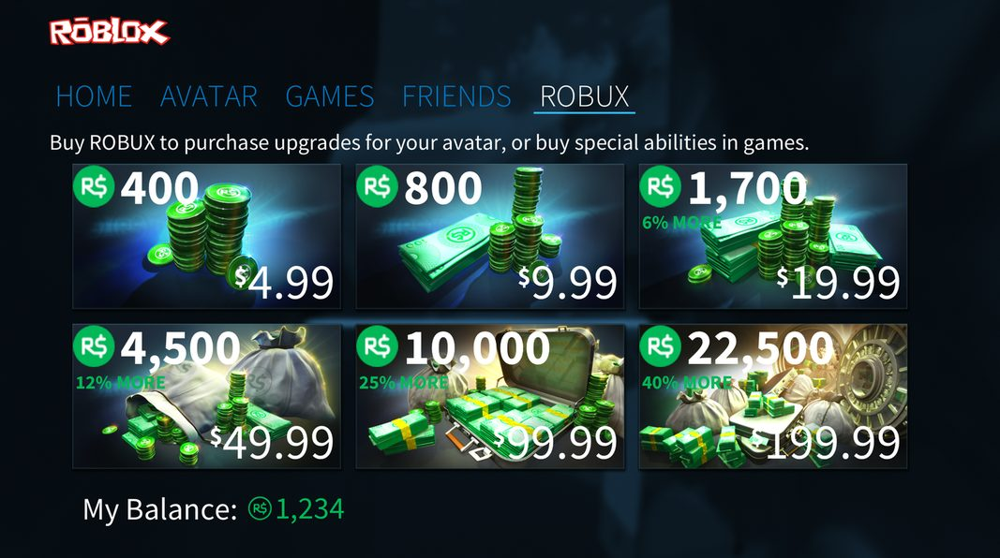

The 2016 menu
Home, Avatar, Games, Friends and ROBUX, laid out like the console app, with search, game pages, favorites and live friend presence.
Relive the past as if you were in 2016!
Press A to Begin
or click anywhere

Download for Windows Latest release
Source on GitHubRust, wgpu, open source Join the DiscordBugs, ideas and parties
What's newEvery release and its notesBack in 2016, Roblox on the Xbox One had its own menu: big tiles, a slow 3D city behind everything, the blue overlay, the sounds. XBLOX: REWIND rebuilds that menu as a native Windows app, screen by screen, and hooks it up to your real Roblox account. When you press Play, the game opens in the normal Roblox player.
Home, Avatar, Games, Friends and ROBUX, laid out like the console app, with search, game pages, favorites and live friend presence.
The City, Space and Volcano flythrough from the original app, with Roblox-style lighting, skyboxes, terrain, unions and meshes.
The 2018 console editor in 3D. Changes show instantly, body scaling matches Studio, and UGC bodies, dynamic heads and layered clothing all work.
Sign in with a code or QR from a device you are already signed in on. A .ROBLOSECURITY cookie works too, stored encrypted.
Host a party and share the address it gives you. Friends join from anywhere, and everyone follows the host into the same server.
The 11 original Xbox achievements plus your Roblox badges, scored by rarity, with popups when you earn them in game.
Presets and settings for themes, logos, loading screens, lighting, Robux icons and button glyphs.
One line in config.ini points the whole launcher, sign-in included, at another site instead of roblox.com.
Latest release
XBLOX-REWIND-windows-x64.zip from the latest release.A fan project. Not made by, affiliated with or endorsed by Roblox Corporation or Microsoft.